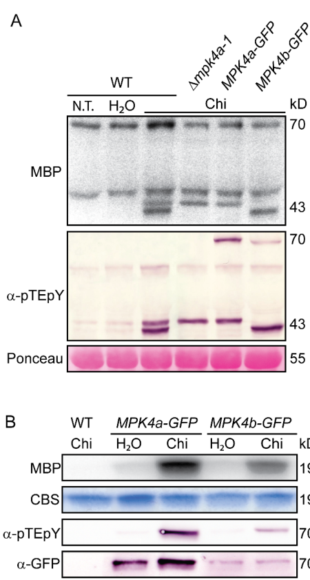

PpMPK4a (A9T142) is a mitogen-activated protein kinase (MAP kinase; EC 2.7.11.24) of the moss Physcomitrium patens (Physcomitrella patens), a non-vascular land plant. It belongs to the CMGC group, MAP kinase subfamily, and carries the canonical TXY (TEY) activation-loop motif at Thr-197/Tyr-199; dual phosphorylation on these residues activates the kinase. MPK4a is the terminal kinase of a moss pattern-triggered immunity (PTI) MAPK cascade: chitin/chitosan and peptidoglycan perception by the chitin receptor CERK1 is transduced through MEKK1a/b (MAPKKK) and MKK1a/b/c (MAPKK) to activate MPK4a (and its paralog MPK4b), driving rapid growth inhibition, cell-wall depositions and accumulation of defense-related transcripts (Bressendorff et al. 2016, PMID:27268428). Activation is rapid (detectable within ~1 min of chitin treatment) and the MPK4a transcript is itself chitin-inducible (~8-fold peak at 2 h). MPK4a kinase activity is demonstrated directly by in-gel and immunoprecipitation kinase assays on the MPK4a-GFP knock-in line, using myelin basic protein as an artificial substrate; no endogenous in vivo substrate has yet been identified. An MPK4a-GFP fusion localizes to both cytoplasm and nucleus (strongest in apical caulonemal cells, rhizoids and newly formed apical tip cells), and this localization does not change appreciably upon chitin treatment. Functionally, MPK4a is REQUIRED for innate immunity: Δmpk4a knockouts appear morphologically wild-type but have reduced chitin-induced cell-wall depositions, reduced induction of defense genes (PAL4, CHS, ERF2, alpha-DOX, LOX7) and increased susceptibility to the necrotrophic fungi Botrytis cinerea and Alternaria brassicicola. Notably MPK4a is NOT activated by ABA or osmotic stress (NaCl, mannitol) - which instead activate SnRK2 kinases - so in moss MPK4a signaling appears specialized for immunity rather than the broad pleiotropic developmental roles of Arabidopsis MPK4. The core function is therefore best captured by specific terms - MAP kinase activity (GO:0004707), MAPK cascade (GO:0000165) and pattern recognition receptor signaling pathway (GO:0002221) - with the broad immunity/defense terms being correct but redundant parents.
| GO Term | Evidence | Action | Reason |
|---|---|---|---|
|
GO:0035556
intracellular signal transduction
|
IBA
GO_REF:0000033 |
ACCEPT |
Summary: IBA annotation propagated across the protein-kinase / MAPK phylogenetic group. MPK4a is an intracellular Ser/Thr kinase acting in a cytoplasmic-nuclear signal-transduction cascade.
Reason: Correct but generic. MPK4a is the terminal kinase of an intracellular MAPK signaling cascade transducing chitin/PAMP perception to defense outputs [PMID:27268428]. The IBA term "intracellular signal transduction" is biologically accurate and at the broad grouping level expected for the kinase phylogeny; the more specific and informative process role is the MAPK cascade / pattern recognition receptor signaling pathway (retained below). Acceptable as a high-level parent.
Supporting Evidence:
file:PHYPA/MPK4a/MPK4a-deep-research-falcon.md
In plant immunity, MAPKs often function downstream of pattern-recognition receptors (PRRs) that perceive pathogen-associated molecular patterns (PAMPs) to drive pattern-triggered immunity (PTI). In *P. patens*, MPK4a is a PAMP-responsive MAPK acting in PTI
|
|
GO:0000165
MAPK cascade
|
IEA
GO_REF:0000108 |
ACCEPT |
Summary: IEA annotation (inter-ontology logical inference from MAP kinase activity). MPK4a is the terminal MAPK of the CERK1 -> MEKK1a/b -> MKK1a/b/c -> MPK4a/b chitin-triggered cascade.
Reason: Strongly supported and a core process annotation. The primary study establishes a complete moss MAPK cascade in which chitin activation requires a chitin receptor (CERK1) and one or more MAP kinase kinase kinases and MAP kinase kinases acting upstream of MPK4a [PMID:27268428]. The activation depends on the CERK1, MEKK1a/b, MKK1a/b/c and MPK4a/b module. This is exactly the biology the term "MAPK cascade" denotes; accept as a core term.
Supporting Evidence:
PMID:27268428
This activation in response to the fungal PAMP chitin requires a chitin receptor and one or more MAP kinase kinase kinases and MAP kinase kinases.
file:PHYPA/MPK4a/MPK4a-deep-research-falcon.md
PpMPK4a functions in a canonical PAMP-triggered immunity MAPK cascade downstream of chitin perception and upstream of defense outputs.
|
|
GO:0002221
pattern recognition receptor signaling pathway
|
IEA
GO_REF:0000117 |
ACCEPT |
Summary: IEA annotation (ARBA machine-learning model) to the same term that is independently supported by direct experimental evidence (IDA, below). MPK4a transduces PAMP perception by pattern-recognition receptors.
Reason: Correct and consistent with the experimentally supported IDA annotation to the same term [PMID:27268428]. MPK4a operates downstream of the chitin pattern-recognition receptor CERK1 in the PAMP-triggered immunity cascade. Duplicate ACCEPT alongside the IDA; the computational call corroborates the experimental one. This is the most informative immunity process term for the gene and supersedes the broad retired SPKW terms.
Supporting Evidence:
file:PHYPA/MPK4a/MPK4a-deep-research-falcon.md
The mechanistic framework in the primary study places MPK4a downstream of chitin perception (chitin receptor CERK1 is required for MPK activation) and upstream of transcriptional and cell-wall defense outputs
|
|
GO:0004672
protein kinase activity
|
IEA
GO_REF:0000002 |
ACCEPT |
Summary: IEA annotation from InterPro (protein kinase domain, IPR000719; Ser/Thr active site, IPR008271). Broad parent of the experimentally demonstrated MAP kinase activity.
Reason: Correct but generic. MPK4a is a bona fide protein kinase - it has an intact kinase domain (residues 39-325), the proton-acceptor active site (Lys/Asp) and the ATP-binding site, and phosphorylates myelin basic protein in vitro [PMID:27268428]. "Protein kinase activity" is a true parent of the more specific and informative MAP kinase activity (GO:0004707) and protein serine/threonine kinase activity terms retained below; acceptable as a broad molecular-function parent.
Supporting Evidence:
file:PHYPA/MPK4a/MPK4a-deep-research-falcon.md
Immunoprecipitated MPK4a-GFP phosphorylated myelin basic protein (MBP) in vitro after chitin treatment.
|
|
GO:0004707
MAP kinase activity
|
IEA
GO_REF:0000120 |
ACCEPT |
Summary: IEA annotation (combined IEA methods; EC 2.7.11.24; MAP_kinase_CS IPR003527) to the same molecular function that is independently supported by direct experiment (IDA, below).
Reason: Correct core molecular function, consistent with the experimental IDA annotation to the same term [PMID:27268428]. MPK4a carries the diagnostic TEY activation-loop motif, is dually phosphorylated on Thr-197/Tyr-199 to become active, and shows kinase activity in gel- and immunoprecipitation-based assays. The IEA corroborates the IDA; accept.
Supporting Evidence:
file:PHYPA/MPK4a/MPK4a-deep-research-falcon.md
PpMPK4a is a bona fide MAP kinase activated by phosphorylation on the TEY motif after elicitation
|
|
GO:0005524
ATP binding
|
IEA
GO_REF:0000002 |
ACCEPT |
Summary: IEA annotation from InterPro (protein kinase domain / ATP-binding signatures IPR000719, IPR003527, IPR017441). Standard for an ATP-dependent protein kinase.
Reason: Correct. MPK4a is an ATP-dependent Ser/Thr kinase (EC 2.7.11.24) with an annotated ATP-binding site (residues 45-53 and 68 in the UniProt feature table) and uses ATP as the phosphate donor in kinase assays. "ATP binding" is a well-supported molecular-function annotation for any active protein kinase.
Supporting Evidence:
file:PHYPA/MPK4a/MPK4a-deep-research-falcon.md
Mitogen-activated protein kinases (MAPKs) are Ser/Thr protein kinases activated by phosphorylation in their activation loop
|
|
GO:0005634
nucleus
|
IEA
GO_REF:0000044 |
ACCEPT |
Summary: IEA annotation (UniProt subcellular-location mapping) for nuclear localization; duplicates and is corroborated by the experimental IDA annotation below.
Reason: Correct and confirmed experimentally. The MPK4a-GFP knock-in fusion localizes to both cytoplasm and nucleus [PMID:27268428]. Nuclear localization is consistent with the role of an activated MAPK in regulating defense gene expression.
Supporting Evidence:
file:PHYPA/MPK4a/MPK4a-deep-research-falcon.md
A knock-in fusion **MPK4a-GFP** localized to **both cytoplasm and nucleus**
|
|
GO:0005737
cytoplasm
|
IEA
GO_REF:0000044 |
ACCEPT |
Summary: IEA annotation (UniProt subcellular-location mapping) for cytoplasmic localization; duplicates and is corroborated by the experimental IDA annotation below.
Reason: Correct and confirmed experimentally. The MPK4a-GFP fusion localizes to both cytoplasm and nucleus [PMID:27268428], consistent with a MAPK that is activated in the cytoplasm and can relocate signaling to the nucleus.
Supporting Evidence:
file:PHYPA/MPK4a/MPK4a-deep-research-falcon.md
MPK4a-GFP localized to both cytoplasm and nucleus, with strongest signal in apical caulonemal cells and rhizoids / newly formed apical tip cells.
|
|
GO:0106310
protein serine kinase activity
|
IEA
GO_REF:0000116 |
ACCEPT |
Summary: IEA annotation from Rhea reaction mapping (RHEA:17989, Ser phosphorylation) to the same molecular function that is independently supported by direct experiment (EXP, below).
Reason: Correct. MPK4a is a MAP kinase of the CMGC Ser/Thr family; the UniProt catalytic-activity statement records both seryl- and threonyl-protein phosphotransferase reactions (EC 2.7.11.24) [PMID:27268428]. The Rhea-derived IEA corroborates the experimental EXP annotation to the same term. Accept; this is a true sub-activity of the MAP kinase MF.
Supporting Evidence:
file:PHYPA/MPK4a/MPK4a-deep-research-falcon.md
consistent with MPK4a acting as a Ser/Thr protein kinase in a MAPK cascade
|
|
GO:0106310
protein serine kinase activity
|
EXP
PMID:27268428 An Innate Immunity Pathway in the Moss Physcomitrella patens... |
ACCEPT |
Summary: Experimental (EXP) annotation from the primary study: MPK4a is a functional Ser/Thr protein kinase demonstrated by in-gel and immunoprecipitation kinase assays.
Reason: Directly supported. Immunoprecipitated MPK4a-GFP phosphorylates myelin basic protein in vitro after chitin elicitation, and in-gel kinase assays show activity; the protein is a CMGC Ser/Thr MAP kinase [PMID:27268428]. The more specific and informative MF for this gene is "MAP kinase activity" (GO:0004707, IDA, retained), but the serine-kinase activity annotation is correct and experimentally grounded.
Supporting Evidence:
file:PHYPA/MPK4a/MPK4a-deep-research-falcon.md
MPK4a is a functional MAP kinase whose **kinase activity** is detectable by **in-gel kinase assays** and by **immunoprecipitation kinase assays** of **MPK4a-GFP** after elicitation.
|
|
GO:0002221
pattern recognition receptor signaling pathway
|
IDA
PMID:27268428 An Innate Immunity Pathway in the Moss Physcomitrella patens... |
ACCEPT |
Summary: Direct experimental (IDA) annotation: MPK4a functions in the PAMP/pattern-recognition receptor signaling pathway downstream of the chitin receptor CERK1. This is the most specific and best-supported immunity process term for the gene.
Reason: Core function, directly demonstrated. MPK4a is rapidly phosphorylated and activated in response to PAMPs (chitin, chitosan, peptidoglycan); this chitin activation requires the chitin receptor (CERK1) and the upstream MEKK/MKK module [PMID:27268428]. Δmpk4a mutants have impaired downstream PTI outputs (reduced cell-wall depositions, reduced defense-gene induction). This term precisely captures MPK4a's role in pattern-recognition-receptor signaling and is the specific term that makes the broad retired SPKW immunity/defense terms redundant.
Supporting Evidence:
PMID:27268428
Two P. patens MPKs (MPK4a and MPK4b) are phosphorylated and activated in response to PAMPs.
PMID:27268428
This activation in response to the fungal PAMP chitin requires a chitin receptor and one or more MAP kinase kinase kinases and MAP kinase kinases.
file:PHYPA/MPK4a/MPK4a-deep-research-falcon.md
MPK4a is one of the two chitin-responsive MPKs (with MPK4b) activated rapidly upon PAMP perception
|
|
GO:0004707
MAP kinase activity
|
IDA
PMID:27268428 An Innate Immunity Pathway in the Moss Physcomitrella patens... |
ACCEPT |
Summary: Direct experimental (IDA) annotation: MPK4a is a functional MAP kinase, demonstrated by kinase assays on the MPK4a-GFP knock-in line and by anti-pTEpY activation immunoblotting.
Reason: Core molecular function, directly demonstrated. The MPK4a band (~42.8 kD; MPK4a-GFP ~70 kD) is activated by TEY-motif dual phosphorylation, and immunoprecipitated MPK4a-GFP phosphorylates MBP in vitro after chitin treatment [PMID:27268428]. This is the most informative molecular-function term for the gene; accept as core.
Supporting Evidence:
file:PHYPA/MPK4a/MPK4a-deep-research-falcon.md
the MPK4a band corresponds to ~42.8 kD, and an MPK4a-GFP fusion appears at ~70 kD. Immunoprecipitated MPK4a-GFP phosphorylated myelin basic protein (MBP) in vitro after chitin treatment.
|
|
GO:0005634
nucleus
|
IDA
PMID:27268428 An Innate Immunity Pathway in the Moss Physcomitrella patens... |
ACCEPT |
Summary: Direct experimental (IDA) annotation for nuclear localization, from MPK4a-GFP confocal imaging. Duplicates the IEA call to the same term.
Reason: Directly supported. The MPK4a-GFP knock-in fusion localizes to both cytoplasm and nucleus, with the pattern unchanged after chitin treatment, consistent with activation by phosphorylation rather than relocalization [PMID:27268428]. Nuclear pool is consistent with transcriptional defense regulation.
Supporting Evidence:
file:PHYPA/MPK4a/MPK4a-deep-research-falcon.md
The localization pattern was reported to show **no major relocalization after chitin treatment**, consistent with activation by phosphorylation rather than gross redistribution
|
|
GO:0005737
cytoplasm
|
IDA
PMID:27268428 An Innate Immunity Pathway in the Moss Physcomitrella patens... |
ACCEPT |
Summary: Direct experimental (IDA) annotation for cytoplasmic localization, from MPK4a-GFP confocal imaging. Duplicates the IEA call to the same term.
Reason: Directly supported. MPK4a-GFP localizes to both cytoplasm and nucleus [PMID:27268428]. The cytoplasmic pool is where the MAPK is activated by upstream MKK phosphorylation. Accept.
Supporting Evidence:
file:PHYPA/MPK4a/MPK4a-deep-research-falcon.md
MPK4a-GFP localized to both cytoplasm and nucleus, with strongest signal in apical caulonemal cells and rhizoids / newly formed apical tip cells.
|
|
GO:0010468
regulation of gene expression
|
IMP
PMID:27268428 An Innate Immunity Pathway in the Moss Physcomitrella patens... |
KEEP AS NON CORE |
Summary: IMP annotation: MPK4a is required for the chitin/chitosan-induced accumulation of defense-related transcripts; Δmpk4a mutants show reduced induction of PAL4, CHS, ERF2, alpha-DOX and LOX7.
Reason: Genuine but indirect/downstream and broadly stated. MPK4a is required for normal induction of defense-related transcripts after chitin/chitosan treatment - in Δmpk4a, accumulation of PAL4, CHS, ERF2, alpha-DOX and LOX7 is reduced [PMID:27268428]. This reflects MPK4a's role at the top of a signaling cascade whose ultimate output is transcriptional reprogramming, rather than a direct DNA/transcription-machinery activity (no endogenous transcription- factor substrate is identified). "Regulation of gene expression" is a very broad process term; the specific, mechanistic role is better captured by the MAPK-cascade / PRR-signaling terms. Retain as a non-core consequence of immune signaling.
Supporting Evidence:
PMID:27268428
This pathway induces rapid growth inhibition, a novel fluorescence burst, cell wall depositions, and accumulation of defense-related transcripts.
file:PHYPA/MPK4a/MPK4a-deep-research-falcon.md
Reduced induction of defense-related transcripts** (e.g., PAL4, CHS and others reported) after chitin/chitosan treatment
|
|
GO:0045087
innate immune response
|
IEA
GO_REF:0000043 |
MARK AS OVER ANNOTATED |
Summary: SPKW (GO_REF:0000043) annotation derived from the UniProt keywords "Immunity" / "Innate immunity"; snapshot-only, removed in the current GOA release. MPK4a genuinely functions in moss innate immunity, but this is a broad parent of the specific "pattern recognition receptor signaling pathway" term already present.
Reason: GOA's removal of this annotation was JUSTIFIED with low information loss. The biology is correct - MPK4a is experimentally required for PAMP-triggered innate immunity in moss [PMID:27268428] - so the term is not wrong. However, "innate immune response" is a broad parent: the pattern-recognition-receptor signaling pathway (GO:0002221), which is annotated with direct experimental evidence (IDA) and is part_of the innate immune response, already captures the gene's role at a far more informative level of specificity. A blanket keyword-derived "innate immune response" term therefore adds little once the specific PTI signaling term is present. Tier A by keyword (a true immunity gene), but the verdict is "correct-but-redundant/superseded" - its removal does not lose biological information.
Supporting Evidence:
PMID:27268428
we provide evidence for a signaling pathway in P. patens required for immunity triggered by pathogen associated molecular patterns
PMID:27268428
Signaling via MPK4a may therefore be specific to immunity, and the moss relies on other pathways to respond to osmotic stress.
file:PHYPA/MPK4a/MPK4a-deep-research-falcon.md
MPK4a (PpMPK4a) is a PAMP-responsive MAP kinase that functions in moss pattern-triggered immunity downstream of chitin perception
|
|
GO:0006952
defense response
|
IEA
GO_REF:0000043 |
MARK AS OVER ANNOTATED |
Summary: SPKW (GO_REF:0000043) annotation derived from the UniProt keyword "Plant defense"; snapshot-only, removed in the current GOA release. MPK4a is genuinely required for pathogen defense, but "defense response" is an even broader parent than "innate immune response" and far broader than the specific PTI signaling term retained in current GOA.
Reason: GOA's removal of this annotation was JUSTIFIED with low information loss. MPK4a is required for defense against necrotrophic fungi - Δmpk4a knockouts have increased susceptibility to Botrytis cinerea and Alternaria brassicicola and reduced chitin-induced cell-wall defenses [PMID:27268428] - so the term is biologically correct. But "defense response" is the most general defense process term, a broad ancestor of both "innate immune response" (GO:0045087) and the experimentally supported "pattern recognition receptor signaling pathway" (GO:0002221) already present. Once the specific PTI signaling term is annotated, this keyword-derived blanket term is redundant and uninformative. Tier A by keyword, but the verdict is "correct-but-redundant/superseded"; a more useful specific defense term, if any were to be added, would be "defense response to fungus" (GO:0050832; proposed below). Its removal is acceptable.
Supporting Evidence:
PMID:27268428
Knockout lines of MPK4a appear wild type but have increased susceptibility to the pathogenic fungi Botrytis cinerea and Alternaria
PMID:27268428
This pathway induces rapid growth inhibition, a novel fluorescence burst, cell wall depositions, and accumulation of defense-related transcripts.
file:PHYPA/MPK4a/MPK4a-deep-research-falcon.md
MPK4a loss compromises multiple PTI outputs (cell-wall defense, defense gene induction, and resistance to necrotrophic fungi)
|
|
GO:0050832
defense response to fungus
|
IMP
PMID:27268428 An Innate Immunity Pathway in the Moss Physcomitrella patens... |
NEW |
Summary: Proposed new annotation. MPK4a is specifically required for resistance to the necrotrophic fungi Botrytis cinerea and Alternaria brassicicola; this is more informative than the broad retired "defense response" SPKW term.
Reason: The retired SPKW "defense response" (GO:0006952) is over-broad, but the experimentally demonstrated biology is specifically anti-fungal: Δmpk4a knockouts have increased susceptibility to the pathogenic fungi B. cinerea and A. brassicicola, with increased cell death and increased fungal sporulation, and MPK4a is activated by the fungal PAMP chitin [PMID:27268428]. "Defense response to fungus" (GO:0050832) precisely captures this and is a more useful replacement for the broad keyword-derived defense term. IMP is justified by the Δmpk4a loss-of-function susceptibility phenotypes.
Supporting Evidence:
PMID:27268428
Knockout lines of MPK4a appear wild type but have increased susceptibility to the pathogenic fungi Botrytis cinerea and Alternaria
file:PHYPA/MPK4a/MPK4a-deep-research-falcon.md
Increased susceptibility to necrotrophic fungi
|
|
GO:0071323
cellular response to chitin
|
IMP
PMID:27268428 An Innate Immunity Pathway in the Moss Physcomitrella patens... |
NEW |
Summary: Proposed new annotation. MPK4a is rapidly activated by chitin/chitosan and is required for chitin-induced cell-wall depositions and defense-gene induction.
Reason: MPK4a is one of the two moss MPKs rapidly phosphorylated/activated in response to the fungal PAMP chitin (and chitosan), with activation detectable within ~1 min, and Δmpk4a mutants have significantly reduced chitin-induced cell-wall depositions and reduced chitin/chitosan induction of defense genes [PMID:27268428]. "Cellular response to chitin" (GO:0071323) is a specific, well-supported process term that complements the PRR-signaling-pathway annotation and is more informative than the broad immunity/defense parents. IMP/IDA evidence from activation kinetics and loss-of-function phenotype.
Supporting Evidence:
file:PHYPA/MPK4a/MPK4a-deep-research-falcon.md
Two MPKs (identified as MPK4a and MPK4b via GFP knock-in) are **rapidly activated** after PAMP treatment, with activation detectable **within ~1 minute** for chitin responses in moss
file:PHYPA/MPK4a/MPK4a-deep-research-falcon.md
Reduced chitin-induced cell-wall depositions** in Δmpk4a lines (toluidine blue cell-wall staining assay)
|
Q: What are the endogenous in vivo substrates of PpMPK4a downstream of chitin perception, and how do they connect the cascade to defense-gene transcription and cell-wall deposition?
Suggested experts: John Mundy
Q: What is the degree of functional redundancy between MPK4a and its paralog MPK4b in moss PTI, given that MPK4b basal transcript abundance is ~20-fold lower than MPK4a?
Suggested experts: Simon Bressendorff
Q: Why has moss MPK4a apparently specialized for immunity (no ABA/osmotic activation and no severe developmental phenotype) whereas Arabidopsis MPK4 is strongly pleiotropic in development - what is the evolutionary basis of this rewiring?
Suggested experts: John Mundy
Experiment: Generate Δmpk4a Δmpk4b double knockouts and quantify PAMP-triggered MAPK activation, cell-wall depositions, defense-gene induction and susceptibility to B. cinerea and A. brassicicola, to resolve the redundancy of the two MPK4 paralogs in moss immunity.
Hypothesis: MPK4a and MPK4b are partially redundant; the double mutant shows a stronger PTI/defense defect than either single mutant.
Type: genetic epistasis / pathogen-susceptibility analysis
Experiment: Use phosphoproteomics on chitin-elicited wild-type versus Δmpk4a moss (and an analog-sensitive MPK4a kinase variant) to identify direct MPK4a substrates linking the cascade to defense-gene transcription and cell-wall reinforcement.
Hypothesis: MPK4a phosphorylates transcription factors (e.g. ERF/WRKY-class) and cell-wall biosynthesis regulators that mediate the downstream PTI outputs.
Type: quantitative phosphoproteomics with analog-sensitive kinase
Experiment: Reconstitute the moss cascade in vitro (CERK1 -> MEKK1a/b -> MKK1a/b/c -> MPK4a) and confirm sequential activation and MPK4a TEY phosphorylation by each upstream component, with and without chitin elicitation of protoplasts.
Hypothesis: The CERK1/MEKK1/MKK1 module is necessary and sufficient to activate MPK4a in response to chitin, as inferred from the loss-of-function genetics.
Type: in vitro cascade reconstitution / protoplast elicitation assay
The research report should be a detailed narrative explaining the function, biological processes, and localization of the gene product. Citations should be given for all claims.
You should prioritize authoritative reviews and primary scientific literature when conducting research. You can supplement
this with annotations you find in gene/protein databases, but these can be outdated or inaccurate.
We are specifically interested in the primary function of the gene - for enzymes, what reaction is catalyzed, and what is the substrate specificity? For transporters, what is the substrate? For structural proteins or adapters, what is the broader structural role? For signaling molecules, what is the role in the pathway.
We are interested in where in or outside the cell the gene product carries out its function.
We are also interested in the signaling or biochemical pathways in which the gene functions. We are less interested in broad pleiotropic effects, except where these elucidate the precise role.
Include evidence where possible. We are interested in both experimental evidence as well as inference from structure, evolution, or bioinformatic analysis. Precise studies should be prioritized over high-throughput, where available.
The evidence synthesized below is restricted to Physcomitrium patens (syn. Physcomitrella patens) MPK4a (also written PpMPK4a), experimentally analyzed via MPK4a-GFP knock-in and Δmpk4a knockout lines in a primary study on moss innate immunity. This matches the user-provided UniProt identity (A9T142: MAP kinase; EC 2.7.11.24; TEY motif MAPK activation; CMGC/MAPK family). No evidence from Arabidopsis or other species is used to claim MPK4a-specific function.
Mitogen-activated protein kinases (MAPKs) are Ser/Thr protein kinases activated by phosphorylation in their activation loop, typically within a MAPK cascade (MAPKKK → MAPKK → MAPK). In plant immunity, MAPKs often function downstream of pattern-recognition receptors (PRRs) that perceive pathogen-associated molecular patterns (PAMPs) to drive pattern-triggered immunity (PTI). In P. patens, MPK4a is a PAMP-responsive MAPK acting in PTI (bressendorff2016aninnateimmunity pages 1-4, bressendorff2016aninnateimmunity pages 15-19).
In moss, PTI can be elicited by fungal cell wall components (e.g., chitin/chitosan) and bacterial peptidoglycan. A central mechanistic conclusion from the primary evidence base is that MPK4a is one of the two chitin-responsive MPKs (with MPK4b) activated rapidly upon PAMP perception, and that MPK4a loss compromises multiple PTI outputs (cell-wall defense, defense gene induction, and resistance to necrotrophic fungi) (bressendorff2016aninnateimmunity pages 1-4, bressendorff2016aninnateimmunity pages 15-19).
MPK4a is a functional MAP kinase whose kinase activity is detectable by in-gel kinase assays and by immunoprecipitation kinase assays of MPK4a-GFP after elicitation. In vitro assays used myelin basic protein (MBP) as an artificial substrate to report kinase activity (phosphorylation of MBP), consistent with MPK4a acting as a Ser/Thr protein kinase in a MAPK cascade (bressendorff2016aninnateimmunity pages 8-12, bressendorff2016aninnateimmunity pages 12-15, bressendorff2016aninnateimmunity pages 25-28).
Substrate specificity (physiological targets): In the retrieved evidence, MPK4a’s activity is demonstrated using MBP and peptide substrates in gel-based assays; however, no endogenous in vivo protein substrate of MPK4a is identified. Thus, substrate specificity beyond being a MAPK is not resolved in the available primary material (bressendorff2016aninnateimmunity pages 8-12, bressendorff2016aninnateimmunity pages 12-15, bressendorff2016aninnateimmunity pages 25-28).
PAMP responsiveness: Two MPKs (identified as MPK4a and MPK4b via GFP knock-in) are rapidly activated after PAMP treatment, with activation detectable within ~1 minute for chitin responses in moss (bressendorff2016aninnateimmunity pages 1-4, bressendorff2016aninnateimmunity pages 15-19). MPK4a activation and phosphorylation were assayed by anti-pTEpY immunoblotting and kinase assays (bressendorff2016aninnateimmunity pages 1-4, bressendorff2016aninnateimmunity pages 8-12, bressendorff2016aninnateimmunity media 884491fc).
Key elicitors shown to activate MPK4a:
- Chitin / chitosan (robust) (bressendorff2016aninnateimmunity pages 1-4, bressendorff2016aninnateimmunity pages 8-12, bressendorff2016aninnateimmunity media 884491fc)
- Peptidoglycan (activation of MPK4 class) (bressendorff2016aninnateimmunity pages 1-4)
- Necrotrophic fungal inoculation (Botrytis cinerea spores), producing weaker activation than soluble chitin (bressendorff2016aninnateimmunity pages 12-15)
Not activated by tested abiotic/osmotic cues: MPK4a (MAPK-sized bands) was not activated by 500 mM NaCl, 800 mM mannitol, or 10 mM ABA under the reported conditions; in contrast, osmotic/ABA conditions activated SnRK2-class kinases around ~40 kD and peptide-substrate phosphorylation consistent with SnRK2 signaling (bressendorff2016aninnateimmunity pages 12-15, bressendorff2016aninnateimmunity pages 19-22).
After chitin treatment, MPK4a mRNA increased within ~15 min, peaked at ~8-fold induction at 2 h, and returned to baseline by ~8 h (bressendorff2016aninnateimmunity pages 8-12). MPK4b basal transcript abundance was reported to be ~20-fold lower than MPK4a in untreated plants (bressendorff2016aninnateimmunity pages 12-15).
Genetic loss-of-function data support MPK4a as a positive regulator of PTI outputs in moss:
- Reduced chitin-induced cell-wall depositions in Δmpk4a lines (toluidine blue cell-wall staining assay) (bressendorff2016aninnateimmunity pages 15-19)
- Reduced induction of defense-related transcripts (e.g., PAL4, CHS and others reported) after chitin/chitosan treatment (bressendorff2016aninnateimmunity pages 12-15, bressendorff2016aninnateimmunity pages 15-19)
- Increased susceptibility to necrotrophic fungi:
- Increased cell death after B. cinerea inoculation measured by Evans blue staining (bressendorff2016aninnateimmunity pages 15-19, bressendorff2016aninnateimmunity media c04b3e3d)
- Increased A. brassicicola sporulation/spore production on Δmpk4a plants (bressendorff2016aninnateimmunity pages 15-19, bressendorff2016aninnateimmunity media c04b3e3d)
Importantly, Δmpk4a plants were reported as phenotypically near-normal under standard growth conditions, contrasting with strong developmental phenotypes known for Arabidopsis mpk4 mutants; this supports a moss-specific specialization of MPK4a toward PTI rather than broad growth regulation in the tested conditions (bressendorff2016aninnateimmunity pages 19-22).
The mechanistic framework in the primary study places MPK4a downstream of chitin perception (chitin receptor CERK1 is required for MPK activation) and upstream of transcriptional and cell-wall defense outputs; MPK4a and MPK4b constitute the MAPKs activated in response to chitin (bressendorff2016aninnateimmunity pages 15-19).
A knock-in fusion MPK4a-GFP localized to both cytoplasm and nucleus, with strong signal reported in apical caulonemal cells and rhizoids/newly formed apical tip cells. The localization pattern was reported to show no major relocalization after chitin treatment, consistent with activation by phosphorylation rather than gross redistribution (bressendorff2016aninnateimmunity pages 8-12, bressendorff2016aninnateimmunity pages 12-15).
The study provides a practical blueprint for functional annotation of signaling genes in P. patens using:
- Targeted gene knockout and knock-in via homologous recombination (a distinctive strength of P. patens as a model) (bressendorff2016aninnateimmunity pages 19-22, bressendorff2016aninnateimmunity pages 15-19)
- C-terminal GFP knock-in to identify which endogenous proteins correspond to activated bands in kinase assays (MPK4a-GFP/MPK4b-GFP) (bressendorff2016aninnateimmunity pages 15-19, bressendorff2016aninnateimmunity media 884491fc)
- Radiolabeled kinase assays (γ-32P ATP) and anti-pTEpY immunoblotting for activation state (bressendorff2016aninnateimmunity pages 25-28)
Quantitative protocol details include (selected examples): immunoprecipitation from extracts adjusted to 1 mg/mL, kinase reaction conditions including 12.5 µM ATP, 5 µg MBP, 10 µCi γ-32P-ATP, and incubation 30°C for 30 min; in-gel assays used 40 µg protein on 13% SDS-PAGE containing MBP or peptide substrate (bressendorff2016aninnateimmunity pages 25-28).
While MPK4a itself is a moss gene, its characterization supports broader real-world efforts to:
- engineer or select for enhanced disease resistance by targeting MAPK-mediated PTI nodes (conceptually),
- use bryophytes as tractable platforms to dissect conserved immunity modules and their evolutionary diversification.
The direct evidence base here is mechanistic and foundational (not an applied field trial), but it underpins the use of Physcomitrium as a genetically precise system for signaling network annotation (bressendorff2016aninnateimmunity pages 15-19, bressendorff2016aninnateimmunity pages 19-22).
The primary study’s interpretation is that MPK4a functions primarily in PTI signaling in P. patens, being robustly activated by PAMPs and required for multiple downstream immune outputs, while being largely non-responsive to ABA/osmotic stress in the tested assays (bressendorff2016aninnateimmunity pages 19-22, bressendorff2016aninnateimmunity pages 15-19). The authors also highlight evolutionary implications: moss MPK4a lacks the severe pleiotropic developmental phenotypes associated with Arabidopsis MPK4, consistent with lineage-specific rewiring or expansion of MPK4 functions in vascular plants (bressendorff2016aninnateimmunity pages 19-22).
Despite targeted searches, the tool-retrievable corpus did not provide 2023–2024 primary articles directly interrogating Physcomitrium MPK4a (UniProt A9T142) with new functional experiments. Therefore, the most authoritative direct functional evidence remains the 2016 Plant Cell study (bressendorff2016aninnateimmunity pages 15-19, bressendorff2016aninnateimmunity pages 8-12).
A 2024 review on stomatal evolution discusses MPK4 in an angiosperm context (Arabidopsis MPK4/MPK12) but does not provide MPK4a-specific functional annotation in moss; it is therefore not used as direct evidence for PpMPK4a function (chen2024stomatalevolutionand not cited in this report due to lack of MPK4a-specific linkage in gathered evidence).
The following table consolidates the major functional-annotation claims and the quantitative evidence supporting each.
| Claim area | Key findings (with numbers) | Evidence type | Source (short citation with year) | URL | Publication date |
|---|---|---|---|---|---|
| Biochemical activity | PpMPK4a is a bona fide MAP kinase activated by phosphorylation on the TEY motif after elicitation; the MPK4a band corresponds to ~42.8 kD, and an MPK4a-GFP fusion appears at ~70 kD. Immunoprecipitated MPK4a-GFP phosphorylated myelin basic protein (MBP) in vitro after chitin treatment. No endogenous substrate was identified in the retrieved sources; MBP was used as a generic kinase substrate (bressendorff2016aninnateimmunity pages 8-12, bressendorff2016aninnateimmunity pages 12-15, bressendorff2016aninnateimmunity media 884491fc) | KI GFP line, anti-pTEpY immunoblot, in-gel kinase assay, GFP-trap immunoprecipitation kinase assay | Bressendorff et al., 2016 | https://doi.org/10.1105/tpc.15.00774 | June 2016 |
| Activation stimuli | Two moss MPKs including MPK4a were rapidly activated by PAMPs including chitin/chitosan and peptidoglycan; activation was detectable within 1 min, and chitin assays commonly used 100 µg/mL chitin. MPK4a-GFP was also activated after Botrytis cinerea spore treatment, though more weakly than with soluble chitin (bressendorff2016aninnateimmunity pages 1-4, bressendorff2016aninnateimmunity pages 15-19, bressendorff2016aninnateimmunity pages 12-15) | Time-course elicitation, immunoblot, in-gel kinase assay, pathogen inoculation | Bressendorff et al., 2016 | https://doi.org/10.1105/tpc.15.00774 | June 2016 |
| Negative stimuli / specificity | MPK4a was not activated by 500 mM NaCl, 800 mM mannitol, or 10 mM ABA in the reported assays. In the same study, osmotic stress instead activated SnRK2-class kinases around ~40 kD, supporting pathway specificity distinct from MPK4a (bressendorff2016aninnateimmunity pages 12-15, bressendorff2016aninnateimmunity pages 19-22) | Stress treatments, comparative kinase assays, anti-pTEpY immunoblot | Bressendorff et al., 2016 | https://doi.org/10.1105/tpc.15.00774 | June 2016 |
| Substrates | The retrieved experimental work supports kinase activity toward the artificial substrate MBP; in-gel kinase assays also used peptide substrates including P3 in pathway-discrimination experiments. No physiological in vivo substrate of PpMPK4a was identified in the retrieved sources, so substrate specificity remains incompletely resolved experimentally for this protein (bressendorff2016aninnateimmunity pages 8-12, bressendorff2016aninnateimmunity pages 12-15, bressendorff2016aninnateimmunity pages 25-28) | In-gel kinase assay, immunoprecipitation kinase assay | Bressendorff et al., 2016 | https://doi.org/10.1105/tpc.15.00774 | June 2016 |
| Localization | MPK4a-GFP localized to both cytoplasm and nucleus, with strongest signal in apical caulonemal cells and rhizoids / newly formed apical tip cells. The localization pattern did not change substantially after chitin treatment (bressendorff2016aninnateimmunity pages 8-12, bressendorff2016aninnateimmunity pages 12-15, bressendorff2016aninnateimmunity media c04b3e3d) | Knock-in GFP fusion, confocal microscopy | Bressendorff et al., 2016 | https://doi.org/10.1105/tpc.15.00774 | June 2016 |
| Genetic phenotypes | Δmpk4a knockout lines were morphologically close to wild type under normal growth, unlike Arabidopsis mpk4 developmental mutants. However, Δmpk4a plants showed reduced chitin-induced cell wall depositions, reduced induction of defense genes, greater Evans blue staining after B. cinerea infection, and higher Alternaria brassicicola spore production than wild type, indicating impaired immunity (bressendorff2016aninnateimmunity pages 15-19, bressendorff2016aninnateimmunity pages 12-15, bressendorff2016aninnateimmunity media c04b3e3d) | Targeted knockout by homologous recombination, pathogen assays, staining, qRT-PCR | Bressendorff et al., 2016 | https://doi.org/10.1105/tpc.15.00774 | June 2016 |
| Pathway placement | PpMPK4a functions in a canonical PAMP-triggered immunity MAPK cascade downstream of chitin perception and upstream of defense outputs. The study concludes that MPK4a primarily functions in pattern-triggered immunity rather than ABA/osmotic signaling; MPK4b likely provides partial redundancy. The pathway was described as requiring a chitin receptor plus upstream MEKK(s) and MKK(s) (bressendorff2016aninnateimmunity pages 1-4, bressendorff2016aninnateimmunity pages 19-22, bressendorff2016aninnateimmunity pages 15-19) | Genetic analysis, elicitor-response biochemistry, pathway inference from mutant/KI data | Bressendorff et al., 2016 | https://doi.org/10.1105/tpc.15.00774 | June 2016 |
| Quantitative data | MPK4a transcript rose within 15 min after chitin, peaked at about 8-fold by 2 h, and returned near baseline by 8 h. MPK4b transcript abundance was reported to be ~20-fold lower than MPK4a in untreated plants. Pathogen assays quantified increased cell death at 2 days after inoculation with 2×10^5 B. cinerea spores/mL and increased A. brassicicola sporulation 4 days after inoculation with ~2,500 spores per plant; significance was reported at p<0.01 to p<0.001 for susceptibility phenotypes (bressendorff2016aninnateimmunity pages 8-12, bressendorff2016aninnateimmunity pages 12-15, bressendorff2016aninnateimmunity pages 15-19, bressendorff2016aninnateimmunity media c04b3e3d) | qRT-PCR, pathogen quantification, Evans blue assay, spore count assay | Bressendorff et al., 2016 | https://doi.org/10.1105/tpc.15.00774 | June 2016 |
| Methods | Key methods included targeted knockout/knock-in by homologous recombination; PEG-mediated moss protoplast transformation with 30 µg linearized DNA; selection with 50 µg/mL G418 or 30 µg/mL hygromycin B; in-gel kinase assays using 40 µg protein on 13% SDS-PAGE containing 14 µM MBP or peptide substrate; GFP-trap immunoprecipitation from extracts adjusted to 1 mg/mL; kinase reactions at 30°C for 30 min in 40 µL buffer with 12.5 µM ATP, 5 µg MBP, and 10 µCi γ-32P-ATP; anti-p42/p44-ERK used at 1:2000 and anti-GFP at 1:1000 (bressendorff2016aninnateimmunity pages 25-28, bressendorff2016aninnateimmunity pages 19-22) | Detailed biochemical and cell-biological protocols | Bressendorff et al., 2016 | https://doi.org/10.1105/tpc.15.00774 | June 2016 |
Table: This table summarizes the experimentally supported functional annotation of Physcomitrium patens MPK4a (UniProt A9T142) from the retrieved literature. It highlights what is directly shown for kinase activity, activation context, localization, immune function, and the main quantitative methods and results.
MPK4a (PpMPK4a) is a PAMP-responsive MAP kinase that functions in moss pattern-triggered immunity downstream of chitin perception, activating defense transcriptional programs and cell-wall defenses, and contributing to resistance against necrotrophic fungal pathogens; it localizes to both cytoplasm and nucleus and is not detectably activated by ABA/osmotic stress in the reported assays. (bressendorff2016aninnateimmunity pages 15-19, bressendorff2016aninnateimmunity pages 8-12, bressendorff2016aninnateimmunity pages 12-15)
References
(bressendorff2016aninnateimmunity pages 1-4): Simon Bressendorff, R. Azevedo, C. Kenchappa, I. Ponce de León, Jakob Olsen, M. Rasmussen, G. Erbs, M. Newman, M. Petersen, and J. Mundy. An innate immunity pathway in the moss physcomitrella patens[open]. Plant Cell, 28:1328-1342, Jun 2016. URL: https://doi.org/10.1105/tpc.15.00774, doi:10.1105/tpc.15.00774. This article has 103 citations and is from a highest quality peer-reviewed journal.
(bressendorff2016aninnateimmunity pages 15-19): Simon Bressendorff, R. Azevedo, C. Kenchappa, I. Ponce de León, Jakob Olsen, M. Rasmussen, G. Erbs, M. Newman, M. Petersen, and J. Mundy. An innate immunity pathway in the moss physcomitrella patens[open]. Plant Cell, 28:1328-1342, Jun 2016. URL: https://doi.org/10.1105/tpc.15.00774, doi:10.1105/tpc.15.00774. This article has 103 citations and is from a highest quality peer-reviewed journal.
(bressendorff2016aninnateimmunity pages 8-12): Simon Bressendorff, R. Azevedo, C. Kenchappa, I. Ponce de León, Jakob Olsen, M. Rasmussen, G. Erbs, M. Newman, M. Petersen, and J. Mundy. An innate immunity pathway in the moss physcomitrella patens[open]. Plant Cell, 28:1328-1342, Jun 2016. URL: https://doi.org/10.1105/tpc.15.00774, doi:10.1105/tpc.15.00774. This article has 103 citations and is from a highest quality peer-reviewed journal.
(bressendorff2016aninnateimmunity pages 12-15): Simon Bressendorff, R. Azevedo, C. Kenchappa, I. Ponce de León, Jakob Olsen, M. Rasmussen, G. Erbs, M. Newman, M. Petersen, and J. Mundy. An innate immunity pathway in the moss physcomitrella patens[open]. Plant Cell, 28:1328-1342, Jun 2016. URL: https://doi.org/10.1105/tpc.15.00774, doi:10.1105/tpc.15.00774. This article has 103 citations and is from a highest quality peer-reviewed journal.
(bressendorff2016aninnateimmunity pages 25-28): Simon Bressendorff, R. Azevedo, C. Kenchappa, I. Ponce de León, Jakob Olsen, M. Rasmussen, G. Erbs, M. Newman, M. Petersen, and J. Mundy. An innate immunity pathway in the moss physcomitrella patens[open]. Plant Cell, 28:1328-1342, Jun 2016. URL: https://doi.org/10.1105/tpc.15.00774, doi:10.1105/tpc.15.00774. This article has 103 citations and is from a highest quality peer-reviewed journal.
(bressendorff2016aninnateimmunity media 884491fc): Simon Bressendorff, R. Azevedo, C. Kenchappa, I. Ponce de León, Jakob Olsen, M. Rasmussen, G. Erbs, M. Newman, M. Petersen, and J. Mundy. An innate immunity pathway in the moss physcomitrella patens[open]. Plant Cell, 28:1328-1342, Jun 2016. URL: https://doi.org/10.1105/tpc.15.00774, doi:10.1105/tpc.15.00774. This article has 103 citations and is from a highest quality peer-reviewed journal.
(bressendorff2016aninnateimmunity pages 19-22): Simon Bressendorff, R. Azevedo, C. Kenchappa, I. Ponce de León, Jakob Olsen, M. Rasmussen, G. Erbs, M. Newman, M. Petersen, and J. Mundy. An innate immunity pathway in the moss physcomitrella patens[open]. Plant Cell, 28:1328-1342, Jun 2016. URL: https://doi.org/10.1105/tpc.15.00774, doi:10.1105/tpc.15.00774. This article has 103 citations and is from a highest quality peer-reviewed journal.
(bressendorff2016aninnateimmunity media c04b3e3d): Simon Bressendorff, R. Azevedo, C. Kenchappa, I. Ponce de León, Jakob Olsen, M. Rasmussen, G. Erbs, M. Newman, M. Petersen, and J. Mundy. An innate immunity pathway in the moss physcomitrella patens[open]. Plant Cell, 28:1328-1342, Jun 2016. URL: https://doi.org/10.1105/tpc.15.00774, doi:10.1105/tpc.15.00774. This article has 103 citations and is from a highest quality peer-reviewed journal.

id: A9T142
gene_symbol: MPK4a
product_type: PROTEIN
status: COMPLETE
taxon:
id: NCBITaxon:3218
label: Physcomitrium patens
description: >
PpMPK4a (A9T142) is a mitogen-activated protein kinase (MAP kinase; EC 2.7.11.24) of the
moss Physcomitrium patens (Physcomitrella patens), a non-vascular land plant. It belongs to
the CMGC group, MAP kinase subfamily, and carries the canonical TXY (TEY) activation-loop
motif at Thr-197/Tyr-199; dual phosphorylation on these residues activates the kinase. MPK4a
is the terminal kinase of a moss pattern-triggered immunity (PTI) MAPK cascade:
chitin/chitosan and peptidoglycan perception by the chitin receptor CERK1 is transduced
through MEKK1a/b (MAPKKK) and MKK1a/b/c (MAPKK) to activate MPK4a (and its paralog MPK4b),
driving rapid growth inhibition, cell-wall depositions and accumulation of defense-related
transcripts (Bressendorff et al. 2016, PMID:27268428). Activation is rapid (detectable within
~1 min of chitin treatment) and the MPK4a transcript is itself chitin-inducible (~8-fold peak
at 2 h). MPK4a kinase activity is demonstrated directly by in-gel and immunoprecipitation
kinase assays on the MPK4a-GFP knock-in line, using myelin basic protein as an artificial
substrate; no endogenous in vivo substrate has yet been identified. An MPK4a-GFP fusion
localizes to both cytoplasm and nucleus (strongest in apical caulonemal cells, rhizoids and
newly formed apical tip cells), and this localization does not change appreciably upon chitin
treatment. Functionally, MPK4a is REQUIRED for innate immunity: Δmpk4a knockouts appear
morphologically wild-type but have reduced chitin-induced cell-wall depositions, reduced
induction of defense genes (PAL4, CHS, ERF2, alpha-DOX, LOX7) and increased susceptibility to
the necrotrophic fungi Botrytis cinerea and Alternaria brassicicola. Notably MPK4a is NOT
activated by ABA or osmotic stress (NaCl, mannitol) - which instead activate SnRK2 kinases -
so in moss MPK4a signaling appears specialized for immunity rather than the broad pleiotropic
developmental roles of Arabidopsis MPK4. The core function is therefore best captured by
specific terms - MAP kinase activity (GO:0004707), MAPK cascade (GO:0000165) and pattern
recognition receptor signaling pathway (GO:0002221) - with the broad immunity/defense terms
being correct but redundant parents.
existing_annotations:
# --- Current GOA annotations (2026 release) ---
- term:
id: GO:0035556
label: intracellular signal transduction
evidence_type: IBA
original_reference_id: GO_REF:0000033
qualifier: involved_in
review:
summary: >
IBA annotation propagated across the protein-kinase / MAPK phylogenetic group. MPK4a is
an intracellular Ser/Thr kinase acting in a cytoplasmic-nuclear signal-transduction
cascade.
action: ACCEPT
reason: >
Correct but generic. MPK4a is the terminal kinase of an intracellular MAPK signaling
cascade transducing chitin/PAMP perception to defense outputs [PMID:27268428]. The IBA
term "intracellular signal transduction" is biologically accurate and at the broad
grouping level expected for the kinase phylogeny; the more specific and informative
process role is the MAPK cascade / pattern recognition receptor signaling pathway
(retained below). Acceptable as a high-level parent.
supported_by:
- reference_id: file:PHYPA/MPK4a/MPK4a-deep-research-falcon.md
supporting_text: "In plant immunity, MAPKs often function downstream of pattern-recognition
receptors (PRRs) that perceive pathogen-associated molecular patterns (PAMPs) to drive
pattern-triggered immunity (PTI). In *P. patens*, MPK4a is a PAMP-responsive MAPK acting
in PTI"
- term:
id: GO:0000165
label: MAPK cascade
evidence_type: IEA
original_reference_id: GO_REF:0000108
qualifier: involved_in
review:
summary: >
IEA annotation (inter-ontology logical inference from MAP kinase activity). MPK4a is the
terminal MAPK of the CERK1 -> MEKK1a/b -> MKK1a/b/c -> MPK4a/b chitin-triggered cascade.
action: ACCEPT
reason: >
Strongly supported and a core process annotation. The primary study establishes a complete
moss MAPK cascade in which chitin activation requires a chitin receptor (CERK1) and one or
more MAP kinase kinase kinases and MAP kinase kinases acting upstream of MPK4a
[PMID:27268428]. The activation depends on the CERK1, MEKK1a/b, MKK1a/b/c and MPK4a/b
module. This is exactly the biology the term "MAPK cascade" denotes; accept as a core
term.
supported_by:
- reference_id: PMID:27268428
supporting_text: "This activation in response to the fungal PAMP chitin requires a chitin
receptor and one or more MAP kinase kinase kinases and MAP kinase kinases."
- reference_id: file:PHYPA/MPK4a/MPK4a-deep-research-falcon.md
supporting_text: "PpMPK4a functions in a canonical PAMP-triggered immunity MAPK cascade
downstream of chitin perception and upstream of defense outputs."
- term:
id: GO:0002221
label: pattern recognition receptor signaling pathway
evidence_type: IEA
original_reference_id: GO_REF:0000117
qualifier: involved_in
review:
summary: >
IEA annotation (ARBA machine-learning model) to the same term that is independently
supported by direct experimental evidence (IDA, below). MPK4a transduces PAMP perception
by pattern-recognition receptors.
action: ACCEPT
reason: >
Correct and consistent with the experimentally supported IDA annotation to the same term
[PMID:27268428]. MPK4a operates downstream of the chitin pattern-recognition receptor
CERK1 in the PAMP-triggered immunity cascade. Duplicate ACCEPT alongside the IDA; the
computational call corroborates the experimental one. This is the most informative
immunity process term for the gene and supersedes the broad retired SPKW terms.
supported_by:
- reference_id: file:PHYPA/MPK4a/MPK4a-deep-research-falcon.md
supporting_text: "The mechanistic framework in the primary study places MPK4a downstream
of chitin perception (chitin receptor CERK1 is required for MPK activation) and upstream
of transcriptional and cell-wall defense outputs"
- term:
id: GO:0004672
label: protein kinase activity
evidence_type: IEA
original_reference_id: GO_REF:0000002
qualifier: enables
review:
summary: >
IEA annotation from InterPro (protein kinase domain, IPR000719; Ser/Thr active site,
IPR008271). Broad parent of the experimentally demonstrated MAP kinase activity.
action: ACCEPT
reason: >
Correct but generic. MPK4a is a bona fide protein kinase - it has an intact kinase domain
(residues 39-325), the proton-acceptor active site (Lys/Asp) and the ATP-binding site, and
phosphorylates myelin basic protein in vitro [PMID:27268428]. "Protein kinase activity" is
a true parent of the more specific and informative MAP kinase activity (GO:0004707) and
protein serine/threonine kinase activity terms retained below; acceptable as a broad
molecular-function parent.
supported_by:
- reference_id: file:PHYPA/MPK4a/MPK4a-deep-research-falcon.md
supporting_text: "Immunoprecipitated MPK4a-GFP phosphorylated myelin basic protein (MBP)
in vitro after chitin treatment."
- term:
id: GO:0004707
label: MAP kinase activity
evidence_type: IEA
original_reference_id: GO_REF:0000120
qualifier: enables
review:
summary: >
IEA annotation (combined IEA methods; EC 2.7.11.24; MAP_kinase_CS IPR003527) to the same
molecular function that is independently supported by direct experiment (IDA, below).
action: ACCEPT
reason: >
Correct core molecular function, consistent with the experimental IDA annotation to the
same term [PMID:27268428]. MPK4a carries the diagnostic TEY activation-loop motif, is
dually phosphorylated on Thr-197/Tyr-199 to become active, and shows kinase activity in
gel- and immunoprecipitation-based assays. The IEA corroborates the IDA; accept.
supported_by:
- reference_id: file:PHYPA/MPK4a/MPK4a-deep-research-falcon.md
supporting_text: "PpMPK4a is a bona fide MAP kinase activated by phosphorylation on the TEY
motif after elicitation"
- term:
id: GO:0005524
label: ATP binding
evidence_type: IEA
original_reference_id: GO_REF:0000002
qualifier: enables
review:
summary: >
IEA annotation from InterPro (protein kinase domain / ATP-binding signatures IPR000719,
IPR003527, IPR017441). Standard for an ATP-dependent protein kinase.
action: ACCEPT
reason: >
Correct. MPK4a is an ATP-dependent Ser/Thr kinase (EC 2.7.11.24) with an annotated
ATP-binding site (residues 45-53 and 68 in the UniProt feature table) and uses ATP as the
phosphate donor in kinase assays. "ATP binding" is a well-supported molecular-function
annotation for any active protein kinase.
supported_by:
- reference_id: file:PHYPA/MPK4a/MPK4a-deep-research-falcon.md
supporting_text: "Mitogen-activated protein kinases (MAPKs) are Ser/Thr protein kinases
activated by phosphorylation in their activation loop"
- term:
id: GO:0005634
label: nucleus
evidence_type: IEA
original_reference_id: GO_REF:0000044
qualifier: located_in
review:
summary: >
IEA annotation (UniProt subcellular-location mapping) for nuclear localization; duplicates
and is corroborated by the experimental IDA annotation below.
action: ACCEPT
reason: >
Correct and confirmed experimentally. The MPK4a-GFP knock-in fusion localizes to both
cytoplasm and nucleus [PMID:27268428]. Nuclear localization is consistent with the role of
an activated MAPK in regulating defense gene expression.
supported_by:
- reference_id: file:PHYPA/MPK4a/MPK4a-deep-research-falcon.md
supporting_text: "A knock-in fusion **MPK4a-GFP** localized to **both cytoplasm and
nucleus**"
- term:
id: GO:0005737
label: cytoplasm
evidence_type: IEA
original_reference_id: GO_REF:0000044
qualifier: located_in
review:
summary: >
IEA annotation (UniProt subcellular-location mapping) for cytoplasmic localization;
duplicates and is corroborated by the experimental IDA annotation below.
action: ACCEPT
reason: >
Correct and confirmed experimentally. The MPK4a-GFP fusion localizes to both cytoplasm and
nucleus [PMID:27268428], consistent with a MAPK that is activated in the cytoplasm and can
relocate signaling to the nucleus.
supported_by:
- reference_id: file:PHYPA/MPK4a/MPK4a-deep-research-falcon.md
supporting_text: "MPK4a-GFP localized to both cytoplasm and nucleus, with strongest signal
in apical caulonemal cells and rhizoids / newly formed apical tip cells."
- term:
id: GO:0106310
label: protein serine kinase activity
evidence_type: IEA
original_reference_id: GO_REF:0000116
qualifier: enables
review:
summary: >
IEA annotation from Rhea reaction mapping (RHEA:17989, Ser phosphorylation) to the same
molecular function that is independently supported by direct experiment (EXP, below).
action: ACCEPT
reason: >
Correct. MPK4a is a MAP kinase of the CMGC Ser/Thr family; the UniProt catalytic-activity
statement records both seryl- and threonyl-protein phosphotransferase reactions (EC
2.7.11.24) [PMID:27268428]. The Rhea-derived IEA corroborates the experimental EXP
annotation to the same term. Accept; this is a true sub-activity of the MAP kinase MF.
supported_by:
- reference_id: file:PHYPA/MPK4a/MPK4a-deep-research-falcon.md
supporting_text: "consistent with MPK4a acting as a Ser/Thr protein kinase in a MAPK
cascade"
- term:
id: GO:0106310
label: protein serine kinase activity
evidence_type: EXP
original_reference_id: PMID:27268428
qualifier: enables
review:
summary: >
Experimental (EXP) annotation from the primary study: MPK4a is a functional Ser/Thr
protein kinase demonstrated by in-gel and immunoprecipitation kinase assays.
action: ACCEPT
reason: >
Directly supported. Immunoprecipitated MPK4a-GFP phosphorylates myelin basic protein in
vitro after chitin elicitation, and in-gel kinase assays show activity; the protein is a
CMGC Ser/Thr MAP kinase [PMID:27268428]. The more specific and informative MF for this
gene is "MAP kinase activity" (GO:0004707, IDA, retained), but the serine-kinase activity
annotation is correct and experimentally grounded.
supported_by:
- reference_id: file:PHYPA/MPK4a/MPK4a-deep-research-falcon.md
supporting_text: "MPK4a is a functional MAP kinase whose **kinase activity** is detectable
by **in-gel kinase assays** and by **immunoprecipitation kinase assays** of **MPK4a-GFP**
after elicitation."
- term:
id: GO:0002221
label: pattern recognition receptor signaling pathway
evidence_type: IDA
original_reference_id: PMID:27268428
qualifier: involved_in
review:
summary: >
Direct experimental (IDA) annotation: MPK4a functions in the PAMP/pattern-recognition
receptor signaling pathway downstream of the chitin receptor CERK1. This is the most
specific and best-supported immunity process term for the gene.
action: ACCEPT
reason: >
Core function, directly demonstrated. MPK4a is rapidly phosphorylated and activated in
response to PAMPs (chitin, chitosan, peptidoglycan); this chitin activation requires the
chitin receptor (CERK1) and the upstream MEKK/MKK module [PMID:27268428]. Δmpk4a mutants
have impaired downstream PTI outputs (reduced cell-wall depositions, reduced defense-gene
induction). This term precisely captures MPK4a's role in pattern-recognition-receptor
signaling and is the specific term that makes the broad retired SPKW immunity/defense
terms redundant.
supported_by:
- reference_id: PMID:27268428
supporting_text: "Two P. patens MPKs (MPK4a and MPK4b) are phosphorylated and activated in
response to PAMPs."
- reference_id: PMID:27268428
supporting_text: "This activation in response to the fungal PAMP chitin requires a chitin
receptor and one or more MAP kinase kinase kinases and MAP kinase kinases."
- reference_id: file:PHYPA/MPK4a/MPK4a-deep-research-falcon.md
supporting_text: "MPK4a is one of the two chitin-responsive MPKs (with MPK4b) activated
rapidly upon PAMP perception"
- term:
id: GO:0004707
label: MAP kinase activity
evidence_type: IDA
original_reference_id: PMID:27268428
qualifier: enables
review:
summary: >
Direct experimental (IDA) annotation: MPK4a is a functional MAP kinase, demonstrated by
kinase assays on the MPK4a-GFP knock-in line and by anti-pTEpY activation immunoblotting.
action: ACCEPT
reason: >
Core molecular function, directly demonstrated. The MPK4a band (~42.8 kD; MPK4a-GFP ~70
kD) is activated by TEY-motif dual phosphorylation, and immunoprecipitated MPK4a-GFP
phosphorylates MBP in vitro after chitin treatment [PMID:27268428]. This is the most
informative molecular-function term for the gene; accept as core.
supported_by:
- reference_id: file:PHYPA/MPK4a/MPK4a-deep-research-falcon.md
supporting_text: "the MPK4a band corresponds to ~42.8 kD, and an MPK4a-GFP fusion appears
at ~70 kD. Immunoprecipitated MPK4a-GFP phosphorylated myelin basic protein (MBP) in
vitro after chitin treatment."
- term:
id: GO:0005634
label: nucleus
evidence_type: IDA
original_reference_id: PMID:27268428
qualifier: located_in
review:
summary: >
Direct experimental (IDA) annotation for nuclear localization, from MPK4a-GFP confocal
imaging. Duplicates the IEA call to the same term.
action: ACCEPT
reason: >
Directly supported. The MPK4a-GFP knock-in fusion localizes to both cytoplasm and nucleus,
with the pattern unchanged after chitin treatment, consistent with activation by
phosphorylation rather than relocalization [PMID:27268428]. Nuclear pool is consistent with
transcriptional defense regulation.
supported_by:
- reference_id: file:PHYPA/MPK4a/MPK4a-deep-research-falcon.md
supporting_text: "The localization pattern was reported to show **no major relocalization
after chitin treatment**, consistent with activation by phosphorylation rather than gross
redistribution"
- term:
id: GO:0005737
label: cytoplasm
evidence_type: IDA
original_reference_id: PMID:27268428
qualifier: located_in
review:
summary: >
Direct experimental (IDA) annotation for cytoplasmic localization, from MPK4a-GFP confocal
imaging. Duplicates the IEA call to the same term.
action: ACCEPT
reason: >
Directly supported. MPK4a-GFP localizes to both cytoplasm and nucleus [PMID:27268428]. The
cytoplasmic pool is where the MAPK is activated by upstream MKK phosphorylation. Accept.
supported_by:
- reference_id: file:PHYPA/MPK4a/MPK4a-deep-research-falcon.md
supporting_text: "MPK4a-GFP localized to both cytoplasm and nucleus, with strongest signal
in apical caulonemal cells and rhizoids / newly formed apical tip cells."
- term:
id: GO:0010468
label: regulation of gene expression
evidence_type: IMP
original_reference_id: PMID:27268428
qualifier: involved_in
review:
summary: >
IMP annotation: MPK4a is required for the chitin/chitosan-induced accumulation of
defense-related transcripts; Δmpk4a mutants show reduced induction of PAL4, CHS, ERF2,
alpha-DOX and LOX7.
action: KEEP_AS_NON_CORE
reason: >
Genuine but indirect/downstream and broadly stated. MPK4a is required for normal induction
of defense-related transcripts after chitin/chitosan treatment - in Δmpk4a, accumulation of
PAL4, CHS, ERF2, alpha-DOX and LOX7 is reduced [PMID:27268428]. This reflects MPK4a's role
at the top of a signaling cascade whose ultimate output is transcriptional reprogramming,
rather than a direct DNA/transcription-machinery activity (no endogenous transcription-
factor substrate is identified). "Regulation of gene expression" is a very broad process
term; the specific, mechanistic role is better captured by the MAPK-cascade / PRR-signaling
terms. Retain as a non-core consequence of immune signaling.
supported_by:
- reference_id: PMID:27268428
supporting_text: "This pathway induces rapid growth inhibition, a novel fluorescence burst,
cell wall depositions, and accumulation of defense-related transcripts."
- reference_id: file:PHYPA/MPK4a/MPK4a-deep-research-falcon.md
supporting_text: "Reduced induction of defense-related transcripts** (e.g., PAL4, CHS and
others reported) after chitin/chitosan treatment"
# --- SPKW keyword-mapping annotations (GO_REF:0000043) ---
# Present in the Sept 2025 goa_uniprot_gcrp snapshot; REMOVED from the current (2026)
# GOA release when GOA retired the keyword2GO (SwissProt-keyword -> GO) pipeline for
# cellular organisms. Re-added here and reviewed retrospectively to assess whether their
# removal was justified. Both derive from the UniProt "Immunity / Innate immunity /
# Plant defense" keywords. MPK4a genuinely IS an immunity/defense kinase, but these are
# broad PARENT terms of the specific, experimentally supported "pattern recognition
# receptor signaling pathway" (GO:0002221) already present in current GOA.
- term:
id: GO:0045087
label: innate immune response
evidence_type: IEA
original_reference_id: GO_REF:0000043
retired: true
qualifier: involved_in
review:
summary: >
SPKW (GO_REF:0000043) annotation derived from the UniProt keywords "Immunity" /
"Innate immunity"; snapshot-only, removed in the current GOA release. MPK4a genuinely
functions in moss innate immunity, but this is a broad parent of the specific
"pattern recognition receptor signaling pathway" term already present.
action: MARK_AS_OVER_ANNOTATED
reason: >
GOA's removal of this annotation was JUSTIFIED with low information loss. The biology is
correct - MPK4a is experimentally required for PAMP-triggered innate immunity in moss
[PMID:27268428] - so the term is not wrong. However, "innate immune response" is a broad
parent: the pattern-recognition-receptor signaling pathway (GO:0002221), which is annotated
with direct experimental evidence (IDA) and is part_of the innate immune response, already
captures the gene's role at a far more informative level of specificity. A blanket
keyword-derived "innate immune response" term therefore adds little once the specific PTI
signaling term is present. Tier A by keyword (a true immunity gene), but the verdict is
"correct-but-redundant/superseded" - its removal does not lose biological information.
supported_by:
- reference_id: PMID:27268428
supporting_text: "we provide evidence for a signaling pathway in P. patens required for
immunity triggered by pathogen associated molecular patterns"
- reference_id: PMID:27268428
supporting_text: "Signaling via MPK4a may therefore be specific to immunity, and the moss
relies on other pathways to respond to osmotic stress."
- reference_id: file:PHYPA/MPK4a/MPK4a-deep-research-falcon.md
supporting_text: "MPK4a (PpMPK4a) is a PAMP-responsive MAP kinase that functions in moss
pattern-triggered immunity downstream of chitin perception"
- term:
id: GO:0006952
label: defense response
evidence_type: IEA
original_reference_id: GO_REF:0000043
retired: true
qualifier: involved_in
review:
summary: >
SPKW (GO_REF:0000043) annotation derived from the UniProt keyword "Plant defense";
snapshot-only, removed in the current GOA release. MPK4a is genuinely required for
pathogen defense, but "defense response" is an even broader parent than "innate immune
response" and far broader than the specific PTI signaling term retained in current GOA.
action: MARK_AS_OVER_ANNOTATED
reason: >
GOA's removal of this annotation was JUSTIFIED with low information loss. MPK4a is required
for defense against necrotrophic fungi - Δmpk4a knockouts have increased susceptibility to
Botrytis cinerea and Alternaria brassicicola and reduced chitin-induced cell-wall defenses
[PMID:27268428] - so the term is biologically correct. But "defense response" is the most
general defense process term, a broad ancestor of both "innate immune response" (GO:0045087)
and the experimentally supported "pattern recognition receptor signaling pathway"
(GO:0002221) already present. Once the specific PTI signaling term is annotated, this
keyword-derived blanket term is redundant and uninformative. Tier A by keyword, but the
verdict is "correct-but-redundant/superseded"; a more useful specific defense term, if any
were to be added, would be "defense response to fungus" (GO:0050832; proposed below). Its
removal is acceptable.
supported_by:
- reference_id: PMID:27268428
supporting_text: "Knockout lines of MPK4a appear wild type but have increased susceptibility
to the pathogenic fungi Botrytis cinerea and Alternaria"
- reference_id: PMID:27268428
supporting_text: "This pathway induces rapid growth inhibition, a novel fluorescence burst,
cell wall depositions, and accumulation of defense-related transcripts."
- reference_id: file:PHYPA/MPK4a/MPK4a-deep-research-falcon.md
supporting_text: "MPK4a loss compromises multiple PTI outputs (cell-wall defense, defense
gene induction, and resistance to necrotrophic fungi)"
# --- NEW annotations proposed from the literature ---
- term:
id: GO:0050832
label: defense response to fungus
evidence_type: IMP
original_reference_id: PMID:27268428
qualifier: involved_in
review:
summary: >
Proposed new annotation. MPK4a is specifically required for resistance to the necrotrophic
fungi Botrytis cinerea and Alternaria brassicicola; this is more informative than the broad
retired "defense response" SPKW term.
action: NEW
reason: >
The retired SPKW "defense response" (GO:0006952) is over-broad, but the experimentally
demonstrated biology is specifically anti-fungal: Δmpk4a knockouts have increased
susceptibility to the pathogenic fungi B. cinerea and A. brassicicola, with increased cell
death and increased fungal sporulation, and MPK4a is activated by the fungal PAMP chitin
[PMID:27268428]. "Defense response to fungus" (GO:0050832) precisely captures this and is a
more useful replacement for the broad keyword-derived defense term. IMP is justified by the
Δmpk4a loss-of-function susceptibility phenotypes.
supported_by:
- reference_id: PMID:27268428
supporting_text: "Knockout lines of MPK4a appear wild type but have increased susceptibility
to the pathogenic fungi Botrytis cinerea and Alternaria"
- reference_id: file:PHYPA/MPK4a/MPK4a-deep-research-falcon.md
supporting_text: "Increased susceptibility to necrotrophic fungi"
- term:
id: GO:0071323
label: cellular response to chitin
evidence_type: IMP
original_reference_id: PMID:27268428
qualifier: involved_in
review:
summary: >
Proposed new annotation. MPK4a is rapidly activated by chitin/chitosan and is required for
chitin-induced cell-wall depositions and defense-gene induction.
action: NEW
reason: >
MPK4a is one of the two moss MPKs rapidly phosphorylated/activated in response to the fungal
PAMP chitin (and chitosan), with activation detectable within ~1 min, and Δmpk4a mutants
have significantly reduced chitin-induced cell-wall depositions and reduced chitin/chitosan
induction of defense genes [PMID:27268428]. "Cellular response to chitin" (GO:0071323) is a
specific, well-supported process term that complements the PRR-signaling-pathway annotation
and is more informative than the broad immunity/defense parents. IMP/IDA evidence from
activation kinetics and loss-of-function phenotype.
supported_by:
- reference_id: file:PHYPA/MPK4a/MPK4a-deep-research-falcon.md
supporting_text: "Two MPKs (identified as MPK4a and MPK4b via GFP knock-in) are **rapidly
activated** after PAMP treatment, with activation detectable **within ~1 minute** for
chitin responses in moss"
- reference_id: file:PHYPA/MPK4a/MPK4a-deep-research-falcon.md
supporting_text: "Reduced chitin-induced cell-wall depositions** in Δmpk4a lines (toluidine
blue cell-wall staining assay)"
references:
- id: GO_REF:0000002
title: Gene Ontology annotation through association of InterPro records with GO terms
findings:
- statement: InterPro-to-GO mappings (protein kinase domain IPR000719, Ser/Thr active site
IPR008271, ATP-binding signatures) assign protein kinase activity and ATP binding to MPK4a.
- id: GO_REF:0000033
title: Annotation inferences using phylogenetic trees
findings:
- statement: Protein-kinase / MAPK phylogenetic propagation assigns intracellular signal
transduction and protein serine/threonine kinase activity to MPK4a.
- id: GO_REF:0000043
title: Gene Ontology annotation based on UniProtKB/Swiss-Prot keyword mapping
findings:
- statement: SwissProt keyword-derived (SPKW) annotations present in the Sept 2025
goa_uniprot_gcrp snapshot but removed from the current GOA release after GOA retired the
keyword2GO pipeline for cellular organisms.
- statement: For MPK4a, the "Immunity / Innate immunity / Plant defense" keywords mapped to
broad parents (innate immune response, defense response) of the specific, experimentally
supported "pattern recognition receptor signaling pathway" already present in GOA; their
removal therefore lost little information.
- id: GO_REF:0000044
title: Gene Ontology annotation based on UniProtKB/Swiss-Prot Subcellular Location vocabulary
mapping, accompanied by conservative changes to GO terms applied by UniProt
findings:
- statement: UniProt subcellular-location mapping assigns nucleus and cytoplasm to MPK4a;
both are confirmed experimentally by MPK4a-GFP imaging.
- id: GO_REF:0000108
title: Automatic assignment of GO terms using logical inference, based on on inter-ontology
links
findings:
- statement: Inter-ontology logical inference links MAP kinase activity (GO:0004707) to the
MAPK cascade (GO:0000165) process for MPK4a; supported experimentally by the moss
CERK1->MEKK1->MKK1->MPK4a cascade.
- id: GO_REF:0000116
title: Automatic Gene Ontology annotation based on Rhea mapping
findings:
- statement: Rhea reaction mapping (RHEA:17989) assigns protein serine kinase activity to
MPK4a; consistent with the experimental EXP annotation to the same term.
- id: GO_REF:0000117
title: Electronic Gene Ontology annotations created by ARBA machine learning models
findings:
- statement: ARBA machine-learning model assigns pattern recognition receptor signaling pathway
to MPK4a; corroborates the experimental IDA annotation to the same term.
- id: GO_REF:0000120
title: Combined Automated Annotation using Multiple IEA Methods
findings:
- statement: Combined IEA methods (EC 2.7.11.24; MAP_kinase_CS IPR003527) assign MAP kinase
activity to MPK4a; corroborates the experimental IDA annotation.
- id: PMID:27268428
title: An Innate Immunity Pathway in the Moss Physcomitrella patens.
findings:
- statement: MPK4a (and paralog MPK4b) are phosphorylated and activated in response to PAMPs;
chitin activation requires a chitin receptor and upstream MAPKKK and MAPKK kinases,
defining a CERK1->MEKK1a/b->MKK1a/b/c->MPK4a/b cascade.
- statement: The pathway induces rapid growth inhibition, a fluorescence burst, cell-wall
depositions and accumulation of defense-related transcripts.
- statement: Δmpk4a knockout lines appear morphologically wild-type but have increased
susceptibility to the necrotrophic fungi Botrytis cinerea and Alternaria brassicicola,
reduced chitin-induced cell-wall depositions and reduced induction of PAL4, CHS, ERF2,
alpha-DOX and LOX7 defense transcripts.
- statement: MPK4a is NOT activated by ABA or osmotic stress (NaCl, mannitol), which instead
activate SnRK2 kinases; MPK4a signaling appears specific to immunity in moss.
- statement: MPK4a is dually phosphorylated on Thr-197/Tyr-199 (TEY motif), localizes to
cytoplasm and nucleus, and its transcript is chitosan-inducible (~8-fold peak at 2 h).
- id: file:PHYPA/MPK4a/MPK4a-deep-research-falcon.md
title: Deep-research report (falcon / Edison Scientific Literature) - functional annotation
of Physcomitrium patens MPK4a (A9T142).
findings:
- statement: Synthesizes the Bressendorff et al. 2016 study (Plant Cell, DOI
10.1105/tpc.15.00774, = PMID:27268428), concluding MPK4a is a PAMP-responsive MAP kinase
functioning in moss pattern-triggered immunity downstream of chitin perception (CERK1) and
upstream of transcriptional and cell-wall defense outputs.
- statement: MPK4a kinase activity is demonstrated by in-gel and immunoprecipitation kinase
assays on the MPK4a-GFP knock-in line (MBP substrate); the MPK4a band is ~42.8 kD and the
MPK4a-GFP fusion ~70 kD; no endogenous in vivo substrate has been identified.
- statement: MPK4a-GFP localizes to both cytoplasm and nucleus (strongest in apical caulonemal
cells, rhizoids and newly formed apical tip cells), with no major relocalization after
chitin treatment.
- statement: Δmpk4a knockouts are near-normal morphologically but show reduced chitin-induced
cell-wall depositions, reduced defense-gene induction and increased susceptibility to
necrotrophic fungi (B. cinerea, A. brassicicola).
- statement: MPK4a is rapidly activated by chitin/chitosan and peptidoglycan (within ~1 min)
but is not activated by 500 mM NaCl, 800 mM mannitol or 10 mM ABA, which instead activate
SnRK2-class kinases - indicating immunity-specific specialization distinct from
Arabidopsis MPK4.
core_functions:
- description: >
PpMPK4a is the terminal mitogen-activated protein kinase of a moss pattern-triggered
immunity (PTI) MAPK cascade. It is activated by dual TEY-motif phosphorylation downstream of
the chitin receptor CERK1 and the MEKK1a/b -> MKK1a/b/c module, transducing fungal-PAMP
(chitin/chitosan) and peptidoglycan perception to defense outputs.
molecular_function:
id: GO:0004707
label: MAP kinase activity
directly_involved_in:
- id: GO:0002221
label: pattern recognition receptor signaling pathway
- id: GO:0000165
label: MAPK cascade
locations:
- id: GO:0005737
label: cytoplasm
- id: GO:0005634
label: nucleus
supported_by:
- reference_id: PMID:27268428
supporting_text: "Two P. patens MPKs (MPK4a and MPK4b) are phosphorylated and activated in
response to PAMPs."
- reference_id: PMID:27268428
supporting_text: "This activation in response to the fungal PAMP chitin requires a chitin
receptor and one or more MAP kinase kinase kinases and MAP kinase kinases."
- reference_id: file:PHYPA/MPK4a/MPK4a-deep-research-falcon.md
supporting_text: "PpMPK4a functions in a canonical PAMP-triggered immunity MAPK cascade
downstream of chitin perception and upstream of defense outputs."
- description: >
Through this immune-signaling cascade, MPK4a is required for innate immunity / defense
against necrotrophic fungi: it drives chitin-induced cell-wall depositions and accumulation
of defense-related transcripts, and Δmpk4a moss is hypersusceptible to Botrytis cinerea and
Alternaria brassicicola. This defense role is immunity-specific (MPK4a is not activated by
ABA/osmotic stress).
molecular_function:
id: GO:0004707
label: MAP kinase activity
directly_involved_in:
- id: GO:0050832
label: defense response to fungus
- id: GO:0071323
label: cellular response to chitin
locations:
- id: GO:0005634
label: nucleus
- id: GO:0005737
label: cytoplasm
supported_by:
- reference_id: PMID:27268428
supporting_text: "Knockout lines of MPK4a appear wild type but have increased susceptibility
to the pathogenic fungi Botrytis cinerea and Alternaria"
- reference_id: PMID:27268428
supporting_text: "This pathway induces rapid growth inhibition, a novel fluorescence burst,
cell wall depositions, and accumulation of defense-related transcripts."
- reference_id: file:PHYPA/MPK4a/MPK4a-deep-research-falcon.md
supporting_text: "MPK4a loss compromises multiple PTI outputs (cell-wall defense, defense
gene induction, and resistance to necrotrophic fungi)"
proposed_new_terms: []
suggested_questions:
- question: What are the endogenous in vivo substrates of PpMPK4a downstream of chitin
perception, and how do they connect the cascade to defense-gene transcription and cell-wall
deposition?
experts:
- John Mundy
- question: What is the degree of functional redundancy between MPK4a and its paralog MPK4b in
moss PTI, given that MPK4b basal transcript abundance is ~20-fold lower than MPK4a?
experts:
- Simon Bressendorff
- question: Why has moss MPK4a apparently specialized for immunity (no ABA/osmotic activation
and no severe developmental phenotype) whereas Arabidopsis MPK4 is strongly pleiotropic in
development - what is the evolutionary basis of this rewiring?
experts:
- John Mundy
suggested_experiments:
- description: Generate Δmpk4a Δmpk4b double knockouts and quantify PAMP-triggered MAPK
activation, cell-wall depositions, defense-gene induction and susceptibility to B. cinerea
and A. brassicicola, to resolve the redundancy of the two MPK4 paralogs in moss immunity.
hypothesis: MPK4a and MPK4b are partially redundant; the double mutant shows a stronger
PTI/defense defect than either single mutant.
experiment_type: genetic epistasis / pathogen-susceptibility analysis
- description: Use phosphoproteomics on chitin-elicited wild-type versus Δmpk4a moss (and an
analog-sensitive MPK4a kinase variant) to identify direct MPK4a substrates linking the
cascade to defense-gene transcription and cell-wall reinforcement.
hypothesis: MPK4a phosphorylates transcription factors (e.g. ERF/WRKY-class) and cell-wall
biosynthesis regulators that mediate the downstream PTI outputs.
experiment_type: quantitative phosphoproteomics with analog-sensitive kinase
- description: Reconstitute the moss cascade in vitro (CERK1 -> MEKK1a/b -> MKK1a/b/c -> MPK4a)
and confirm sequential activation and MPK4a TEY phosphorylation by each upstream component,
with and without chitin elicitation of protoplasts.
hypothesis: The CERK1/MEKK1/MKK1 module is necessary and sufficient to activate MPK4a in
response to chitin, as inferred from the loss-of-function genetics.
experiment_type: in vitro cascade reconstitution / protoplast elicitation assay
{kind=link}